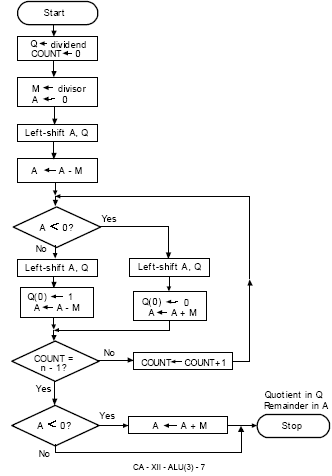
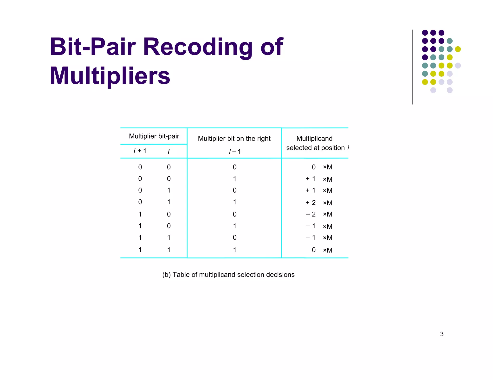

Teach
Learn by steps: Select an operation, enter A and B (binary), then step through the solution.
Step 0 of 3
Calculator
Inputs are unsigned binary strings (e.g., 1011). We use big integers internally, so large values are supported.
Restoring

Restoring Division
- Initialize quotient Q, divisor D, and remainder R = 0.
- For each bit (MSB→LSB): left shift [R,Q] and subtract D from R.
- If R < 0, set current quotient bit to 0 and restore by adding D back to R.
- If R ≥ 0, set current quotient bit to 1 and keep R as is.
Non-restoring

Non-restoring Division
- Initialize [R,Q]. If R ≥ 0, subtract D; else add D.
- Shift left [R,Q] and set the new quotient bit based on the sign of R (1 if R ≥ 0, else 0).
- Repeat for all bits; optionally correct a negative R by adding D at the end.
Bitpair
Bit-pair Recoding

- Recode multiplier in overlapping pairs to digits in {−2, −1, 0, +1, +2}.
- Use ±M and ±2M partial products to reduce the number of non-zero operations.
- Accumulate and shift appropriately to form the final product.
Booth

Booth Multiplication
- Append a Q−1 bit to the multiplier and scan pairs (Q0, Q−1).
- If 01, add +M to accumulator; if 10, add −M; if 00 or 11, add 0.
- Arithmetic shift right [ACC, Q, Q−1] each step.
- Repeat for the number of multiplier bits; the product is [ACC, Q].